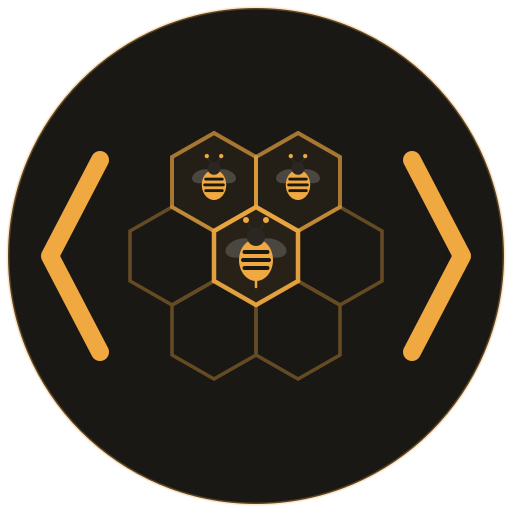

$fleet
One brain, many sessions.
Manage multiple Claude Code sessions on the same project
The problem
÷
Brain drift
Each session builds its own CLAUDE.md. Discoveries in one never reach the others. Three slightly different versions of the truth.
×
Stale branches
One session pushes to main, the rest keep working on an outdated base. Nobody notices until the merge conflicts hit.
∥
Blind coordination
Sessions don't know what each other is doing. Two refactor the same module. One overwrites the other's work.
+
Session setup tax
Every new session means copying the project, restoring trust and permissions, re-establishing context. It adds up.
?
No overview
Costs, progress, what's running, what's idle. You'd have to check each session individually to piece it together.
Architecture
A hive holds the shared context. Each bee gets an isolated workspace while pointing back to the same brain, permissions, and coordination history.
H my-project/
shared hive
◈
CLAUDE.md
one shared brain
↻
.fleet/
tasks + history
✓
.claude/
shared permissions
bee1/active
branch: feature/api
shared core ↗
bee2/active
branch: fix/tests
shared core ↗
bee3/active
branch: docs/guide
shared core ↗
One bee, full lifecycle
Fleet turns a disposable terminal session into a resumable worker with a visible task, durable history, and a clean handoff.
01
Spawnisolated workspace03
Coordinateavoid collisions04
Recorddecisions + progress05
Resumecontinue with context
fleet init
One command lifts shared context out of the project and wraps the original workspace as the first bee.
Beforestandalone
my-project/
├── src/
├── package.json
├── CLAUDE.md
└── .claude/
Code, context, and permissions all live in one workspace.
→
$ fleet init
Afterready to scale
my-project/ hive
├── CLAUDE.md shared
├── .claude/ shared
└── .fleet/
bee1/
├── src/
├── package.json
├── CLAUDE.md →
└── .claude/ →
The original project becomes bee1; shared context moves to the hive.
fleet adopt
Bring an existing workspace under the same brain without rebuilding it by hand.
Beforeseparate
my-project/
├── bee1/
└── bee2/
+
~/project-copy/
├── src/
└── tests/
A useful workspace exists outside the hive with separate context.
→
$ fleet adopt ~/project-copy/
Aftercoordinated
my-project/ hive
├── bee1/
├── bee2/
└── bee3/ → adopted, symlinked
Fleet assigns the next bee number and connects shared context automatically.
See every Claude workspace
Fleet scans configured folders and Claude's own session records, then separates managed hives from standalone stray bees.
project-alpha/
project-beta/
notes/
$ fleet
scan
managed hive3 bees
stray beeActive
stray beeAsleep
Commands
Core
init
Turn a project into a hive
spawn
Create a new bee session
adopt
Bring an external dir in as a bee
Manage
status
List bees and session state
launch
Open a bee in Claude Code
destroy
Remove a bee, clean up links
Smart
doctor
Check symlink health, fix issues
eject
Extract a bee to standalone
refresh
Re-sync all symlinks
clean
Remove dead bee dirs
scan
Find hives and standalone stray bees
Install
$npm i -g fleetode